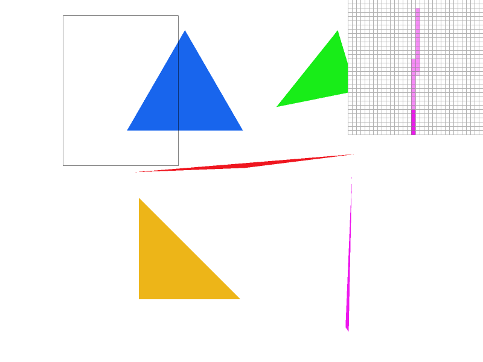
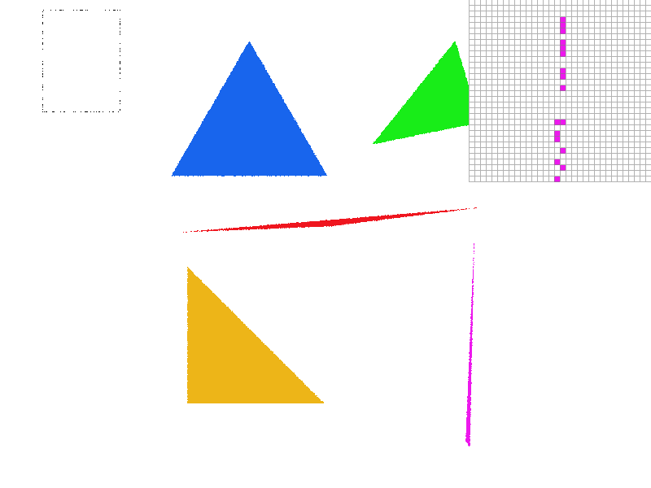
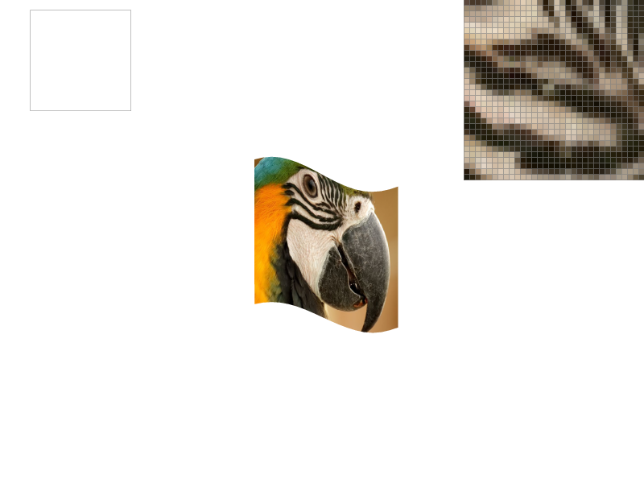
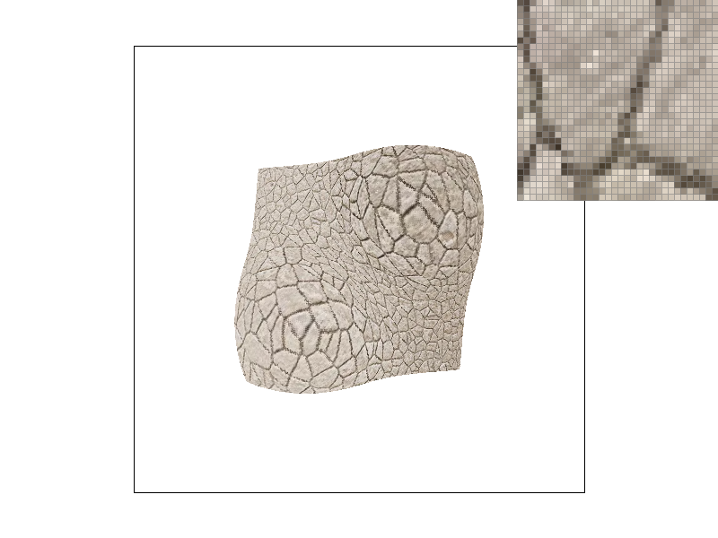
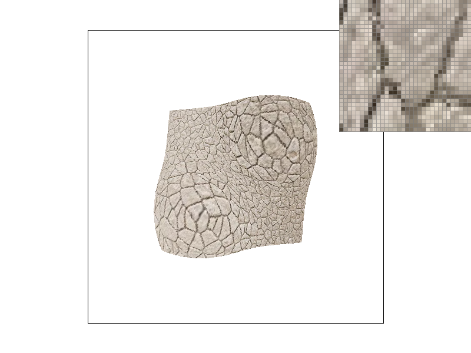
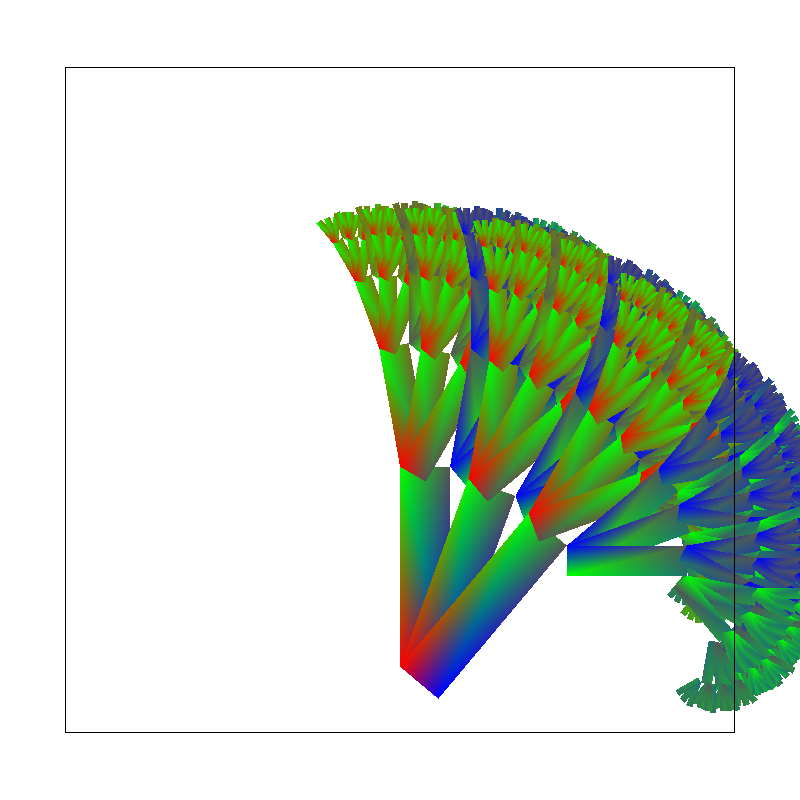

Task1
Walk through
- swap
(x1, y1)and(x2, y2)if clockwise order (this affects basic.test6) - get bounding box by
xmin = min(x0, min(x1, x2))clamped bewteen0towidth - 1,
same forxmaxyminymax - for each pixel in this rectangle area, fill the pixel with given color if in the triangle, otherwise leave alone. This is no worse since it's just
O(BW * BH)complexity whereBW(BH) = width(height) of bounding box
Optimization test
- test4(Default, no optimization)

-
File origin -O3 floodfill -O3 and floodfill basic.test4 0.009137 0.001166 0.013831 0.01215 basic.test3 0.021364 0.021111 1.21973 1.01984
Task2
Walk through
- every call to
fillof sample_buffer is extended to a size ofwidth * height * sample_rate - let
step = sqrt(sample_rate),dd = 1/step,
the four lines with// *!are different from Task 1 and deal with subpixels
``` cpp
for (int x = xl; x <= xr; ++x) {
for (int y = yl; y <= yr; ++y) {
for (int xa = 0; xa < step; ++xa) { // *!
for (int ya = 0; ya < step; ++ ya) { // *!
if (pt_in_tri(x0, y0, x1, y1, x2, y2, x + xa * dd + half, y + ya * dd + half)) { // *!
fill_pixel((size_t)(x * step + xa), (size_t)(y * step + ya), color); // *!
}
}
}
}
}
```
- in
resolve_to_framebuffer:
the square in a size ofsqrt(sample_rate) * sqrt(sample_rate)will get its average calculated into rgb_frambuffer_target - origin pictures:
|
|
 |

- EXTRA: jittered sampling: (in
resolve_to_framebuffer, use arbitrary sample(random) to replace the average)
|
|
|
 |


Task3
The robot is waving his arms like a dancer:

Task4
-
Bary center is the point where the three mid line of a triangle cross each other. Barycentric coordinate is a triple(3-tuple) that decribes
- how far away a point is from the Bary center and the opposite side, to each vertices or
- the portion of each triangle area against each of 3 vertices
- the linear combination of the point vector out of the three vectors (derived from the three vertices).
-
every barycentric coordinate (u, v, w) satisfies u + v + w = 1. Specially
for Bary center, the coordinate is (1/3, 1/3, 1/3),
[Citation: This image comes from www.scratchpixel.com]

-
the coordinate (u, v, w) can also be used to interpolate other linear stuff like
colorortexture uv-coordinates
This is the key line of my own example:<colortri points="0 173.2 100 0 200 173.2" colors="1 0 0 1 0 1 0 1 0 0 1 1 "/>RGB in three vertices are pure red(green or blue), as only one of u, v, w = 1 and the others = 0. The other points have mixed color.

-
basic.test7

Task 5
Walk through
- Based on Task4, but 3 colors are replaced to 3 uv-coordinates. uv-coordinates are calculated using the area portion notation. Take the cited picture again as example:
w = area(PBC) / area(ABC), so is u, v
Hence we can get sp.p_uv by combinate (u, v, w) with given uv-coordinates of A, B, C.
-
The uv-coordinate (u, v) may not be an integer.There are two ways to get the color on the texture.
-
One is to get the nearest point i.e. texcolor(round(u), round(v)).
-
The other way is to interpolate. Imagine we have only 1d-texture,
the coordinate is u.
A, B are integers and corresponding color are CA, CB, A < u < B
and
u = L * A + (1 - L) * B
We can color u with the computed colorL * CA + (1 - L) * CB. -
Now we have two dimensions. suppose
U V are integers and U < u < U + 1 and V < v < V + 1and
u = L1 * U + L2 * (U + 1) v = L3 * V + L4 * (V + 1) where L1 + L2 = 1, L3 + L4 = 1 ```. -
we can color (u, v) with the color
L3 * (L1 * (U, V) + L2 * (U + 1, V)) + L4 * (L1 * (U, V + 1) + L2 * (U + 1, V + 1))This is the bilinear interpolation.
-
The pictures
Supersampling Nearest Bilinear 1x 

16x 

1x Nearest have some `noisy` points in the zoom picture, however `16x Nearest` and the two Bilinear use different average method to smooth the points. (Note for average: Bilinear can be seen as a kind of weighted average of nearest four pixels where supersampling is just about average of some 4 subpixels).
Task6
-
A mipmap is a multi-level group of textures that is used to save multiple precision(zoom) of a texture.
-
L_ZEROwill always use the basic texture. -
The level below refers to the level of details, some uv-coordinate varies faster while some slower while the point travels on the surface.
-
L_NEREASTwill use the texture nearest to the given level -
L_LINEARwill use the two neighbour levels nearest to the
given level- if this gets combined with
P_BILINEAR, there should be a 3-level linear combination, hence called trilinear. -
Color Texture::sample(const SampleParams& sp) { if (sp.lsm == L_ZERO) { if (sp.psm == P_NEAREST) { return sample_nearest(sp.p_uv, 0); } else { return sample_bilinear(sp.p_uv, 0); } } float level = mipmap.size() - 1 + get_level(sp); level = max(level, 0.0f); level = min(level, (float)(mipmap.size() - 1)); if (sp.lsm == L_NEAREST) { int l = (int)round(level); if (sp.psm == P_NEAREST) { return sample_nearest(sp.p_uv, l); } else { return sample_bilinear(sp.p_uv, l); } } else { int ll = (int)floor(level); int lr = (int)ceil(level); if (ll == lr) { if (sp.psm == P_NEAREST) { return sample_nearest(sp.p_uv, ll); } else { return sample_bilinear(sp.p_uv, ll); } } else { double lam = 1 - (level - ll) / (lr - ll); if (sp.psm == P_NEAREST) { return sample_nearest(sp.p_uv, ll) * lam + sample_nearest(sp.p_uv, lr) * (1 - lam); } else { return sample_bilinear(sp.p_uv, ll) * lam + sample_bilinear(sp.p_uv, lr) * (1 - lam); } } } return Color(1, 0, 1); }
- if this gets combined with
-
The result
Pixel | Level Level 0 Nearest Linear Nearest 


Bilinear 

Pixel | Level (Sumtable used, descibed below) Level 0 Nearest Linear Nearest 


Bilinear 


-
I used sumtable to implement another filter. The idea is
keep a partial sum matrix according to mipmaplevel[0] define sumtable.get_texel(tx, ty, dx, dy) as the average color of rectangle (tx, ty) - (tx + dx - 1, ty + dy - 1) for any level, dx = dy = 2^level or 1 << level
the changes are:
- mip.get_level(tx, ty) changed to sumtable.get_level(tx, ty, 1 << level, 1 << level)
- generate_mips will only populate sumtable but not level mip maps
Creative

The code colortree.rb
The skeleton comes from svg/subdiv/test1.svg, but only the
Then a recursive procedure is used to generate the plant recursively like a tree, changing the direction and color recursively.